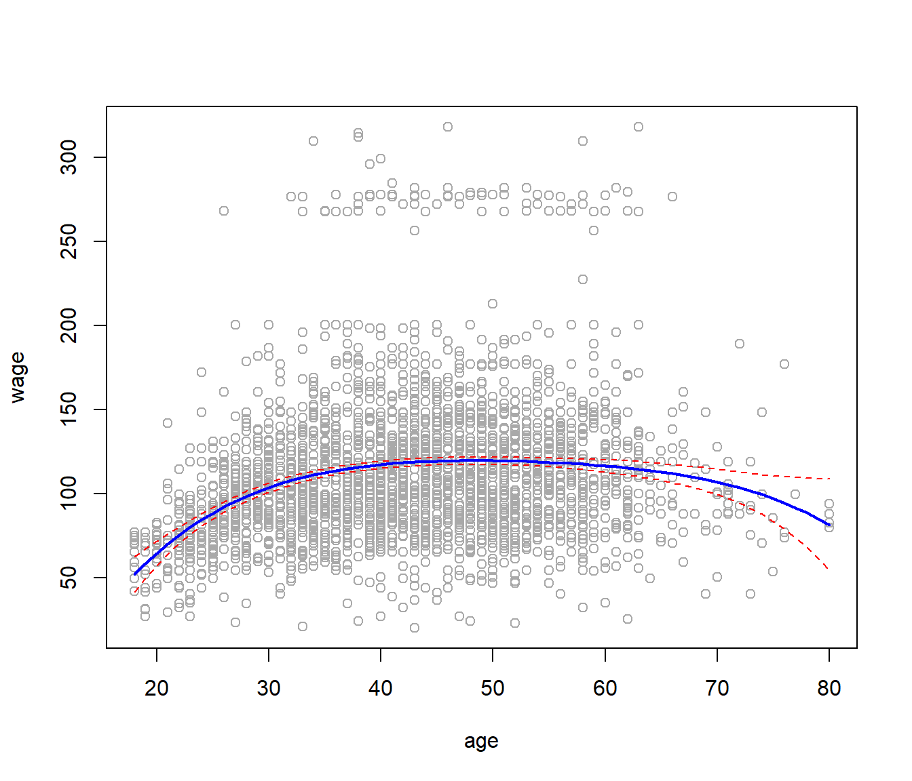
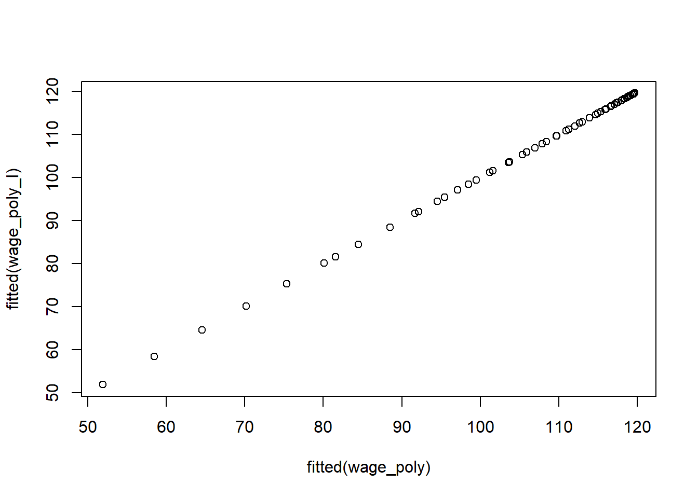
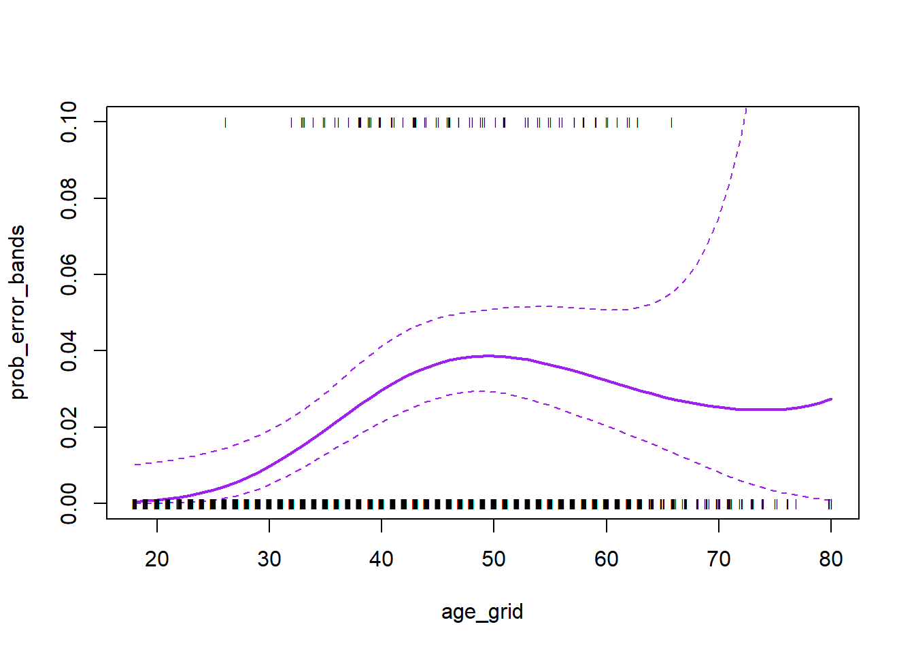
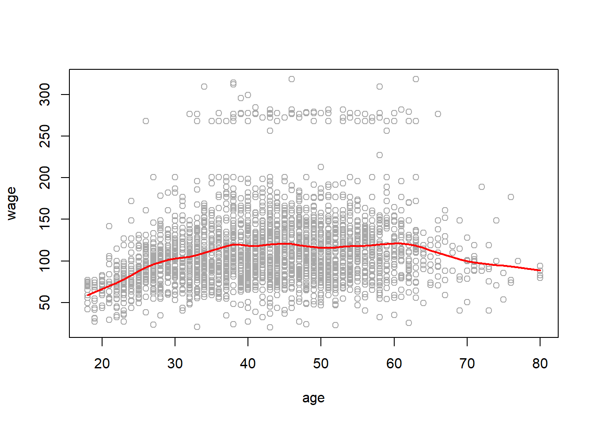
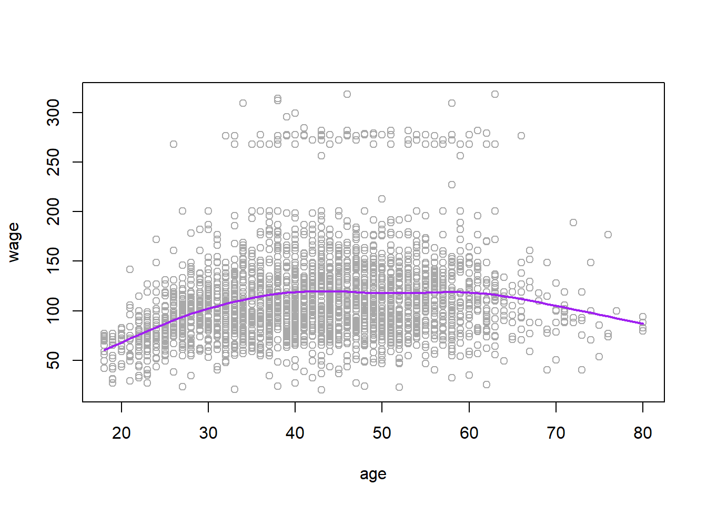
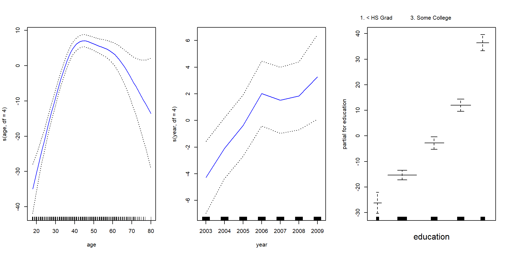
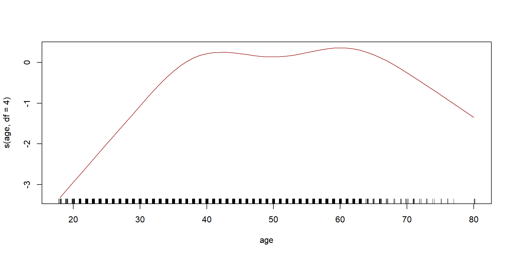
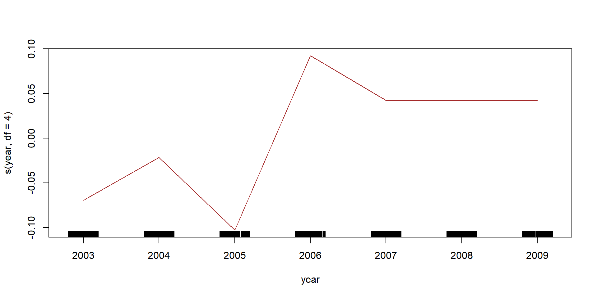
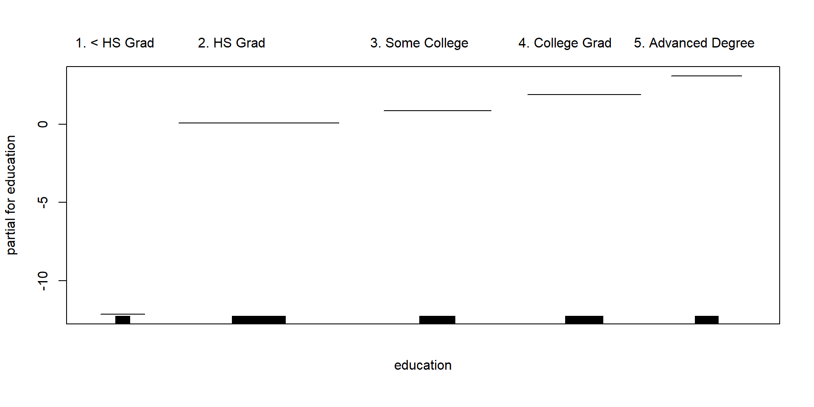
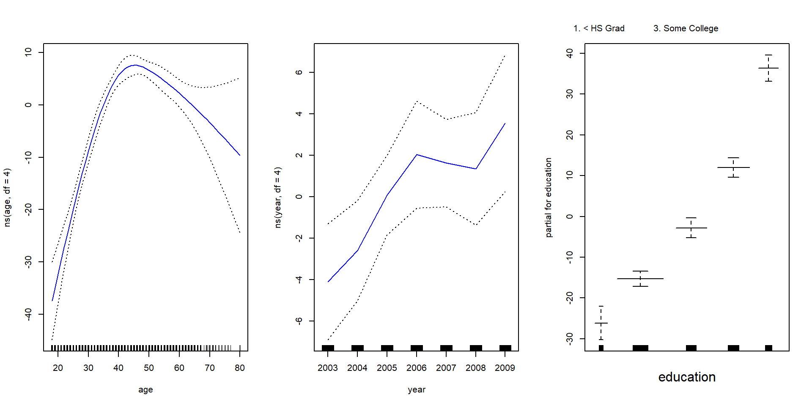

Moving Beyond Linearity
Introduction
Here we explore the use of nonlinear models using some tools in R
library(ISLR)
attach(Wage)Polynomials
First we will use polynomials, and focus on a single predictor age:
\[ y_i = \beta_0 + \beta_1x_i + \beta_2x_i^2 + \beta_3x_i^3 +...+\beta_dx_i^d + \epsilon_i \]
wage_poly <- lm(wage ~ poly(age, 4), data = Wage)
summary(wage_poly)##
## Call:
## lm(formula = wage ~ poly(age, 4), data = Wage)
##
## Residuals:
## Min 1Q Median 3Q Max
## -98.707 -24.626 -4.993 15.217 203.693
##
## Coefficients:
## Estimate Std. Error t value Pr(>|t|)
## (Intercept) 111.7036 0.7287 153.283 < 2e-16 ***
## poly(age, 4)1 447.0679 39.9148 11.201 < 2e-16 ***
## poly(age, 4)2 -478.3158 39.9148 -11.983 < 2e-16 ***
## poly(age, 4)3 125.5217 39.9148 3.145 0.00168 **
## poly(age, 4)4 -77.9112 39.9148 -1.952 0.05104 .
## ---
## Signif. codes: 0 '***' 0.001 '**' 0.01 '*' 0.05 '.' 0.1 ' ' 1
##
## Residual standard error: 39.91 on 2995 degrees of freedom
## Multiple R-squared: 0.08626, Adjusted R-squared: 0.08504
## F-statistic: 70.69 on 4 and 2995 DF, p-value: < 2.2e-16The poly() function generates a basis of orthogonal polynomials of the 4th order
\[ y_i = \hat\beta_0 + \hat\beta_1x_0 + \hat\beta_2x_0^2 + \hat\beta_3x_0^3 + \hat\beta_4x_0^4\] Make a plot of the fitted polynomial function, along with the standard errors of the fit.
range(age)## [1] 18 80age_limits <- range(age)
age_grid <- seq(from = age_limits[1], to = age_limits[2])
wage_prediction <- predict(wage_poly, newdata = list(age = age_grid), se = TRUE)
error_bands <- cbind(wage_prediction$fit + 2 * wage_prediction$se, wage_prediction$fit -
2 * wage_prediction$se)
plot(age, wage, col = "darkgrey")
lines(age_grid, wage_prediction$fit, lwd = 2, col = "blue")
matlines(age_grid, error_bands, col = "red", lty = 2)
There are other more direct ways of doing this. For example
wage_poly_I <- lm(wage~age+I(age^2)+I(age^3)+I(age^4), data = Wage)
summary(wage_poly_I)##
## Call:
## lm(formula = wage ~ age + I(age^2) + I(age^3) + I(age^4), data = Wage)
##
## Residuals:
## Min 1Q Median 3Q Max
## -98.707 -24.626 -4.993 15.217 203.693
##
## Coefficients:
## Estimate Std. Error t value Pr(>|t|)
## (Intercept) -1.842e+02 6.004e+01 -3.067 0.002180 **
## age 2.125e+01 5.887e+00 3.609 0.000312 ***
## I(age^2) -5.639e-01 2.061e-01 -2.736 0.006261 **
## I(age^3) 6.811e-03 3.066e-03 2.221 0.026398 *
## I(age^4) -3.204e-05 1.641e-05 -1.952 0.051039 .
## ---
## Signif. codes: 0 '***' 0.001 '**' 0.01 '*' 0.05 '.' 0.1 ' ' 1
##
## Residual standard error: 39.91 on 2995 degrees of freedom
## Multiple R-squared: 0.08626, Adjusted R-squared: 0.08504
## F-statistic: 70.69 on 4 and 2995 DF, p-value: < 2.2e-16Here I() is a wrapper function; we need it because age^2 means something to the formula language, while I(age^2) is protected. The coefficients are different to those we got before! However, the fits are the same:
plot(fitted(wage_poly), fitted(wage_poly_I))
By using orthogonal polynomials in this simple way, we can separately test for each coefficient. So if we look at the summary again, we can see that the linear, quadratic and cubic terms are significant, but not the quartic.
summary(wage_poly)##
## Call:
## lm(formula = wage ~ poly(age, 4), data = Wage)
##
## Residuals:
## Min 1Q Median 3Q Max
## -98.707 -24.626 -4.993 15.217 203.693
##
## Coefficients:
## Estimate Std. Error t value Pr(>|t|)
## (Intercept) 111.7036 0.7287 153.283 < 2e-16 ***
## poly(age, 4)1 447.0679 39.9148 11.201 < 2e-16 ***
## poly(age, 4)2 -478.3158 39.9148 -11.983 < 2e-16 ***
## poly(age, 4)3 125.5217 39.9148 3.145 0.00168 **
## poly(age, 4)4 -77.9112 39.9148 -1.952 0.05104 .
## ---
## Signif. codes: 0 '***' 0.001 '**' 0.01 '*' 0.05 '.' 0.1 ' ' 1
##
## Residual standard error: 39.91 on 2995 degrees of freedom
## Multiple R-squared: 0.08626, Adjusted R-squared: 0.08504
## F-statistic: 70.69 on 4 and 2995 DF, p-value: < 2.2e-16This only works with linear regression, and if there is a single predictor. In general we would use anova() as this next example demonstrates.
wage_ed <- lm(wage ~ education, data = Wage)
wage_ed_age <- lm(wage ~ education + age, data = Wage)
wage_ed_age2 <- lm(wage ~ education + poly(age,2), data = Wage)
wage_ed_age3 <- lm(wage ~ education + poly(age,3), data = Wage)
anova(wage_ed, wage_ed_age, wage_ed_age2, wage_ed_age3)## Analysis of Variance Table
##
## Model 1: wage ~ education
## Model 2: wage ~ education + age
## Model 3: wage ~ education + poly(age, 2)
## Model 4: wage ~ education + poly(age, 3)
## Res.Df RSS Df Sum of Sq F Pr(>F)
## 1 2995 3995721
## 2 2994 3867992 1 127729 102.7378 <2e-16 ***
## 3 2993 3725395 1 142597 114.6969 <2e-16 ***
## 4 2992 3719809 1 5587 4.4936 0.0341 *
## ---
## Signif. codes: 0 '***' 0.001 '**' 0.01 '*' 0.05 '.' 0.1 ' ' 1Polynomial logistic regression
Now we fit a logistic regression model to a binary response variable, constructed from wage. We code the big earners (>250K) as 1, else 0.
\[Pr(y_i > 250|x_i = \frac{exp(\beta_0 + \beta_1x_i + \beta_2x_i^2 +...+\beta_dx_i^d)}{1+exp(\beta_0 + \beta_1x_i + \beta_2x_i^2 +...+\beta_dx_i^d)} \]
binary_wage <- glm(I(wage > 250) ~ poly(age, 3), data = Wage, family = binomial)
summary(binary_wage)##
## Call:
## glm(formula = I(wage > 250) ~ poly(age, 3), family = binomial,
## data = Wage)
##
## Deviance Residuals:
## Min 1Q Median 3Q Max
## -0.2808 -0.2736 -0.2487 -0.1758 3.2868
##
## Coefficients:
## Estimate Std. Error z value Pr(>|z|)
## (Intercept) -3.8486 0.1597 -24.100 < 2e-16 ***
## poly(age, 3)1 37.8846 11.4818 3.300 0.000968 ***
## poly(age, 3)2 -29.5129 10.5626 -2.794 0.005205 **
## poly(age, 3)3 9.7966 8.9990 1.089 0.276317
## ---
## Signif. codes: 0 '***' 0.001 '**' 0.01 '*' 0.05 '.' 0.1 ' ' 1
##
## (Dispersion parameter for binomial family taken to be 1)
##
## Null deviance: 730.53 on 2999 degrees of freedom
## Residual deviance: 707.92 on 2996 degrees of freedom
## AIC: 715.92
##
## Number of Fisher Scoring iterations: 8binary_wage_prediction <- predict(binary_wage, list(age = age_grid), se = T)
binary_error_bands <- binary_wage_prediction$fit + cbind(fit = 0, lower = -2 *
binary_wage_prediction$se, upper = 2 * binary_wage_prediction$se)
binary_error_bands[1:10, ]## fit lower upper
## 1 -7.664756 -10.759826 -4.569686
## 2 -7.324776 -10.106699 -4.542852
## 3 -7.001732 -9.492821 -4.510643
## 4 -6.695229 -8.917158 -4.473300
## 5 -6.404868 -8.378691 -4.431045
## 6 -6.130251 -7.876426 -4.384076
## 7 -5.870980 -7.409397 -4.332563
## 8 -5.626658 -6.976672 -4.276644
## 9 -5.396887 -6.577351 -4.216423
## 10 -5.181269 -6.210574 -4.151964We have done the computations on the logit scale. To transform we need to apply the inverse logit mapping
\[p=\frac{e^\eta}{1+e^\eta}.\]
We can do this simultaneously for all three columns of binary_error_bands. The matplot function is useful.
prob_error_bands <- exp(binary_error_bands)/(1 + exp(binary_error_bands))
matplot(age_grid, prob_error_bands, col = "purple", lwd = c(2, 1, 1), lty = c(1,
2, 2), type = "l", ylim = c(0, 0.1))
points(jitter(age), I(wage > 250)/10, pch = "|", cex = 0.5)
Splines
Splines are more flexible than polynomials, but the idea is rather similar. Here we will explore cubic splines.
library(splines)
wage_spline <- lm(wage ~ bs(age, knots = c(25, 40, 60)), data = Wage)
plot(age, wage, col = "darkgrey")
lines(age_grid, predict(wage_spline, list(age = age_grid)), col = "brown", lwd = 2)
abline(v = c(25, 40, 60), lty = 2, col = "darkgreen")
The smoothing splines does not require knot selection, but it does have a smoothing parameter, which can conveniently be specified via the effective degrees of freedom or df.
wage_smooth <- smooth.spline(age, wage, df = 16)
plot(age, wage, col = "darkgrey")
lines(wage_smooth, col = "red", lwd = 2)
Or we can use LOO cross-validation to select the smoothing parameter for us automatically:
wage_smooth_cv <- smooth.spline(age, wage, cv = TRUE)
plot(age, wage, col = "darkgrey")
lines(wage_smooth_cv, col = "purple", lwd = 2)
wage_smooth_cv## Call:
## smooth.spline(x = age, y = wage, cv = TRUE)
##
## Smoothing Parameter spar= 0.6988943 lambda= 0.02792303 (12 iterations)
## Equivalent Degrees of Freedom (Df): 6.794596
## Penalized Criterion (RSS): 75215.9
## PRESS(l.o.o. CV): 1593.383Generalized Additive Models
So far we have focused on fitting models with mostly single nonlinear terms. The gam package makes it easier to work with multiple nonlinear terms. In addition it knows how to plot these functions and their standard errors.
library(gam)## Loading required package: foreach## Loaded gam 1.14-4wage_gam <- gam(wage ~ s(age, df = 4) + s(year, df = 4) + education, data = Wage)
par(mfrow = c(1, 3))
plot(wage_gam, se = T, col = "blue")
wage_gam2 <- gam(I(wage > 250) ~ s(age, df = 4) + s(year, df = 4) + education,
data = Wage, family = binomial)
plot(wage_gam2, col = "brown")
Lets see if we need a nonlinear terms for year
wage_gam2a <- gam(I(wage > 250) ~ s(age, df = 4) + year + education, data = Wage,
family = binomial)
anova(wage_gam2a, wage_gam2, test = "Chisq")## Analysis of Deviance Table
##
## Model 1: I(wage > 250) ~ s(age, df = 4) + year + education
## Model 2: I(wage > 250) ~ s(age, df = 4) + s(year, df = 4) + education
## Resid. Df Resid. Dev Df Deviance Pr(>Chi)
## 1 2990 603.78
## 2 2987 602.87 3 0.90498 0.8242One nice feature of the gam package is that it knows how to plot the functions nicely, even for models fit by lm and glm.
par(mfrow = c(1,3))
wage_lm <- lm(wage ~ ns(age, df=4) + ns(year, df=4) + education, data = Wage)
plot.gam(wage_lm, se =T, col="blue")